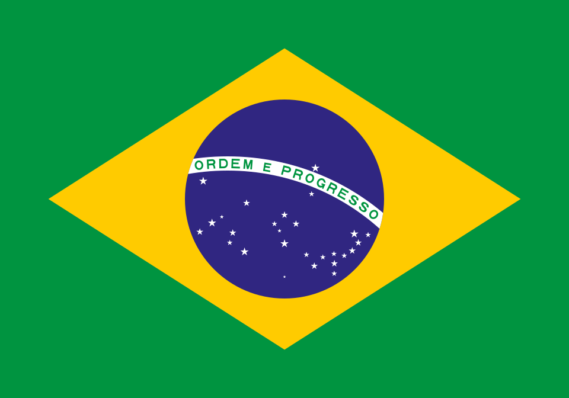

CONMENBOL - Confederação Sul-Americana de Futebol
A CONMEBOL é uma instituição esportiva internacional que organiza, desenvolve e controla competições de futebol. A entidade tem como membros filiados a Associação de Futebol da Argentina, a Federação Boliviana de Futebol, a Confederação Brasileira de Futebol, a Federação de Futebol do Chile, a Federação Colombiana de Futebol, a Federação Equatoriana de Futebol, a Associação Paraguaia de Futebol, a Federação Peruana de Futebol, a Associação Uruguaia de Futebol e a Federação Venezuelana de Futebol. Está sediada na cidade de Luque, perto da capital do Paraguai, Assunção. Os campeonatos mais conhecidos são a CONMEBOL Libertadores (disputado por clubes) e a Copa América (disputado por seleções). A confederação possui seu próprio ranking de clubes. As associações de Guiana, Guiana Francesa e Suriname preferiram aderir à Confederação de Futebol da América do Norte, Central e Caribe (CONCACAF), mesmo fazendo parte geograficamente da América do Sul.
Associação do Futebol Argentino (AFA)

Clubes da Argentina:


Clubes da Bolívia:


Clubes do Brasil:



Associação Desportiva Senador Guiomard (ADESG)
País: Brasil
Fundação: 1982
Ir para o site:


Clubes do Chile:

Colo-Colo
País: Chile
Fundação: 1925
Ir para o site:
Universidad de Chile
País: Chile
Fundação: 1927
Ir para o site:

Federação Colombiana de Futebol (FCF)

Clubes da Colômbia:

Atlético Nacional
País: Colômbia
Fundação: 1947
Ir para o site:

Millonarios FC
País: Colômbia
Fundação: 1946
Ir para o site:
Clubes do Equador:
Associação Paraguaia de Futebol (APF)

Clubes do Paraguai:
Clubes do Peru:

Clubes do Uruguai:
Nacional
País: Uruguai
Fundação: 1899
Ir para o site:
Peñarol
País: Uruguai
Fundação: 1891
Ir para o site:
Clubes da Venezuela: